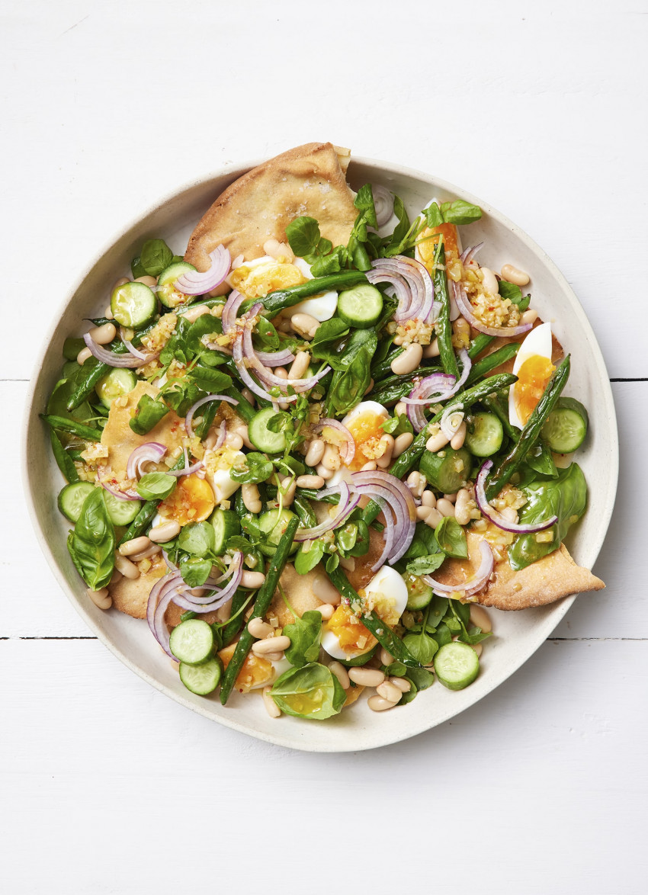

Favorite dishes
Two Bean and Crisp Flatbread Salad with Soft Eggs

Description:
Shards of crisp bread, creamy white beans and a perky preserved lemon dressing make a light but substantial salad.
Ingredients:
- 2 x 20cm Lebanese flatbreads
- 2 tablespoons melted butter
- 1 tablespoon olive oil
- 250 grams slim green beans, stem end trimmed
- sea salt
Steps:
- Preheat the oven to 180°C fan bake.
- Brush both sides of the bread with butter and place on a flat baking tray. Bake for about 10 minutes, turning once, until golden and crisp.
- Heat the oil in a large frying pan and when hot, add the beans. Cook for about 4 minutes, turning often, until lightly blistered in patches. Season with salt and set aside to cool.
- Dressing: Combine all the ingredients in a small bowl.
- To serve: Break the crisp flatbreads into large pieces. Layer up the watercress, green and white beans, cucumber, onion, eggs and basil on a large platter, tucking in some of the bread. Drizzle over the dressing. Serve the remaining bread separately.